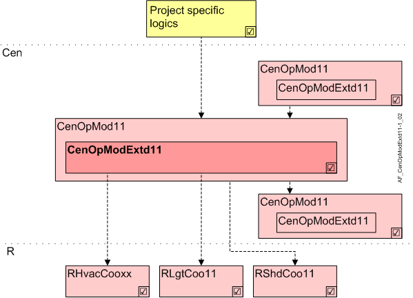

中央操作模式扩展功能 (CenOpModExtd11)
Overview
应用功能》Central operating mode extended functions 11, for presence mode and operating strategy" (CenOpModExtd11) 允许对 HVAC、照明和阴影的存在操作模式以及照明和阴影的操作策略进行详细的集中操作。 AF 将这些命令分发给下级 AFsCenOpModExtd11或直接前往相连的房间。

岑 | 中央职能 |
CenOpMod11 | Central operating mode determination 11 |
CenOpModExtd11 | Central operating mode extended functions 11, for presence mode and operating strategy |
R | 房间 |
RHvacCoo | Room HVAC coordination |
RLgtCoo | Room lighting coordination |
RShdCoo | Room shading coordination |
Function
现有的标准概念Operating mode（本地，每个房间）允许定义特定学科的存在操作模式和每个房间操作模式的策略。
当同一房间操作模式内需要不同的存在操作模式或策略时，使用此扩展的中央AF。
例子：
Lighting presence modeatEconomy下午6点到8点应该是“Consider present & absent“ 和 ”Consider absent“从晚上 8 点到早上 7 点。
中央 AF 准备 BACnet 对象，以在手动模式 3 (Prio 13) 和手动模式 2 (Prio 8) 下从管理站控制特定学科的存在操作模式和操作策略。
通过调度程序或项目特定程序可以在自动模式 (Prio 15) 下运行。由于它在房间内以 prio 14 发出命令，因此该操作也优先于本地操作模式概念。
如果没有选择这些操作模式的变体，则执行本地预设操作模式概念。
Configuration
没有任何。
Interface
界面 | 描述 | 类型 | 参考号 | 所有者 |
|---|---|---|---|---|
HvacPscMod | HVAC presence mode | MPrcVal | ● | - |
LgtPscMod | Lighting presence mode | MPrcVal | ● | - |
ShdPscMod | Shading presence mode | MPrcVal | ● | - |
LgtOpStrgy | Lighting operating strategy | MPrcVal | ● | - |
ShdOpStrgy | Shading operating strategy | MPrcVal | ● | - |
CenOpModMst | Manager for central operating mode | GrpMst | ◉ | Central function / Device |